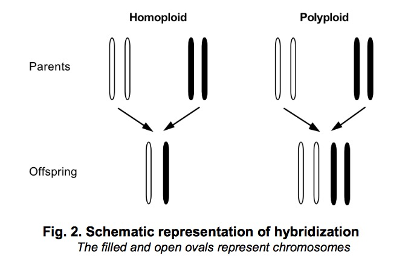
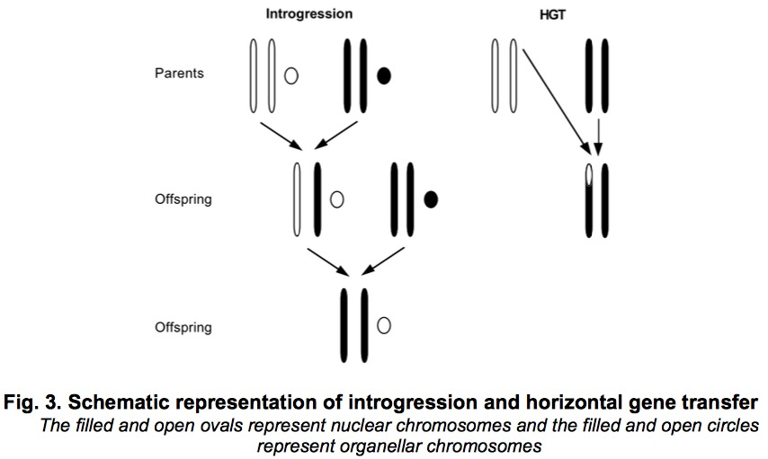

Last updated: 2018-01-05
Code version: 6e5eb01
Evolution involves a series of unobservable historical events, we could neither make direct observation nor perform experiment to investigate them, making phylogenetic an interesting and challenging discipline.
Sources of evolutionary novelty include vertical evolutionary processes and horizontal evolutionary processes. Phylogenetic trees are intended to solely for vertical processes, however, phylogenetic networks is more general with accommodating horizontal events. These horizontal evolutionary processes are represented by reticulation in networks. In this review paper, the author focus on the rooted phylogenetic network, even though there are a few automated methods available for constructing them. Most empirical networks are constructed either manually or by modifying the output of computer program.
Pay attention to these words:diploid, polyploid, homoploid
Horizontal evolutionary processes contain hybridization, introgression, HGT, recombination, viral reassortment and genome fusion. The last one is considered to be rather rare since it means the addition of whole genome from one specie to another specie.
Hybridization: Hybridization is very common in plants and a small group of animals like fish and reptiles. The new hybrid species consist same amount of genomic materials from each of the two parental species, ie 50:50 composition. Fig 2 shows the difference between homoploid and polyploid. In particular, polyploid is the only form of reticulate evolution we can construct the history by trees. From multi-labelled trees, K.T.Huber has constructed available and implementable method to construct phylogenetic network that is guaranteed to have a minimal number of interaction nodes. The core of this algorithm is merge and prune maximal inextendible subtrees and its equivalent subtrees, this process is repeated until a network is obtained that contains no repeated labeled leaves. Java package PADRE is available to visualize the network. 
Introgression is not 50:50 composition because hybrid individuals back-cross preferentially to one of the parental species.
Introgression and HGT are both the transfer of genetic materials from one specie to another, but the former one occur via sexual reproduction and latter one does not. Fig 3 also vividly show the introgression and HGT. HGT is detected by incompatibility between two or more trees for the same site of species. HGT is common among bacterias. 
Reassortment means when two strains co-infect a host cell, then create a new strain by re-combing these two genetic materials.
Recombination concludes intra-genic Recombination and inter-genic Recombination. The former one represents the break-points occur within a single gene, however, the latter one can occur in different genes or non-coding space between genes. A noticeable point is crossover means double recombination. In general , genes with low level of recombination will have low levels of polymorphism, hence, recombination has important influence on genome and genetic structure in population.
Homoplasy is the development of organs or other bodily structure within different species, resemble each other and have same functions, but do not have the same ancestral origins. For instance, the wings of insects, birds and bats, are homoplastic (meaning: similar in form and structure, but not in origin).
Apparently, there is a growing need for researchers to detect and display the evolutionary networks.
Lastly, author introduced briefly current usage of different reticulate patterns. Available programs are as following: Dendroscope and SplitsTree for hybridization, SPRIT for HGT, Kwarg and SHRUB for recombination.
Feedbacks from Yao-ban:
This R Markdown site was created with workflowr